材料
※粉量を変えると自動計算されます
生地
作り方
生地
STEP 1
仕込み水を作る
ぬるま湯と冷たい牛乳を合わせ、30～35℃ほどの人肌くらいの温度にします。寒い時期は仕込み水の温度が低すぎると発酵が進みにくいため、イーストが働きやすい温度に整えてから使います。
ぬるま湯と冷たい牛乳を合わせ、30～35℃ほどの人肌くらいの温度にします。寒い時期は仕込み水の温度が低すぎると発酵が進みにくいため、イーストが働きやすい温度に整えてから使います。
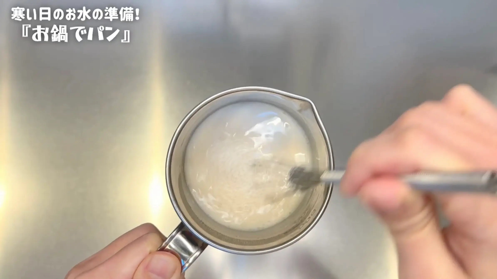
STEP 2
粉類に仕込み水を加え、ヘラで混ぜる
強力粉と塩を混ぜ合わせ、仕込み水を加えてヘラで2分ほど混ぜます。牛乳やバターを使ったリッチな生地なので、この時点では少しベタつきますが、粉気がなくなり、ひとまとまりになればOKです。
強力粉と塩を混ぜ合わせ、仕込み水を加えてヘラで2分ほど混ぜます。牛乳やバターを使ったリッチな生地なので、この時点では少しベタつきますが、粉気がなくなり、ひとまとまりになればOKです。
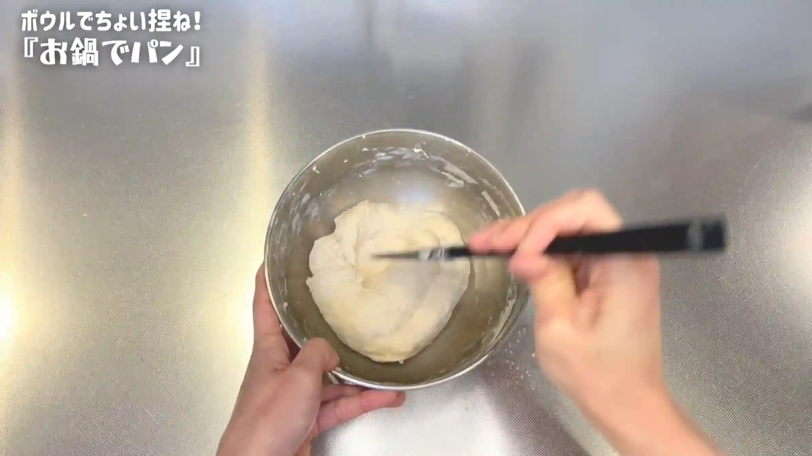
STEP 3
バターを加え、手で捏ねる（[動画 05:08]）
バターを加え、手で4分半ほど捏ねます。最初は生地がベタつきますが、そのままボウルの中でちょい捏ねしていきます。捏ねているうちに少しずつ生地がまとまり、ボウルから離れやすくなったら、次の工程へ進みます。
バターを加え、手で4分半ほど捏ねます。最初は生地がベタつきますが、そのままボウルの中でちょい捏ねしていきます。捏ねているうちに少しずつ生地がまとまり、ボウルから離れやすくなったら、次の工程へ進みます。
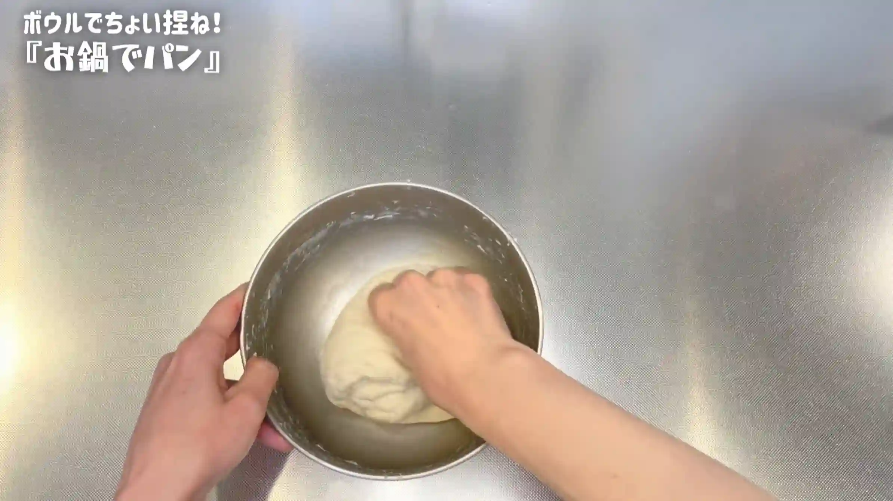
STEP 4
室温で15分おく
乾燥しないようにラップをして、生地を休ませます。ここではまだ生地が少し粗くても大丈夫です。15分休ませてから、次の工程で生地を整えていきます。
乾燥しないようにラップをして、生地を休ませます。ここではまだ生地が少し粗くても大丈夫です。15分休ませてから、次の工程で生地を整えていきます。
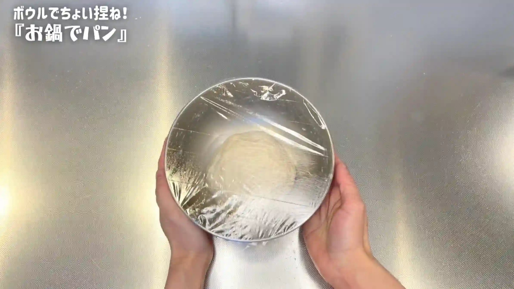
STEP 5
生地をボウルの中で叩く（[動画 06:30]）
生地をボウルの中で1分ほど叩きます。捏ねているときに残っていたベタつきが少しずつ取れ、生地の表面がツルッとなめらかになってきたらOKです。
生地をボウルの中で1分ほど叩きます。捏ねているときに残っていたベタつきが少しずつ取れ、生地の表面がツルッとなめらかになってきたらOKです。
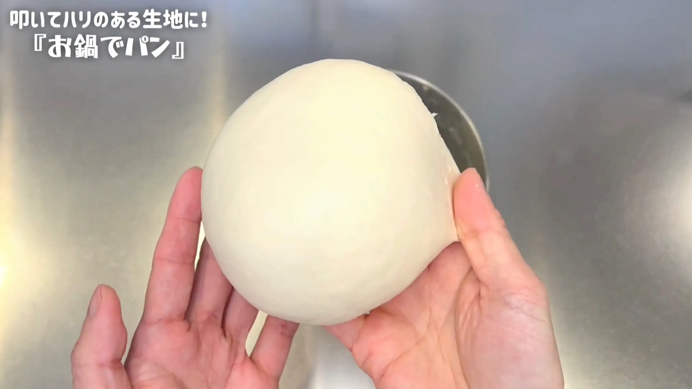
STEP 6
室温で生地が2倍に膨らむまでおく
乾燥しないようにラップをして、一次発酵させます。60分～90分を目安に、生地が元の約2倍に膨らむまでおいていきます。発酵時間は室温によって変わるため、生地の膨らみを確認して次の工程へ進みます。
乾燥しないようにラップをして、一次発酵させます。60分～90分を目安に、生地が元の約2倍に膨らむまでおいていきます。発酵時間は室温によって変わるため、生地の膨らみを確認して次の工程へ進みます。
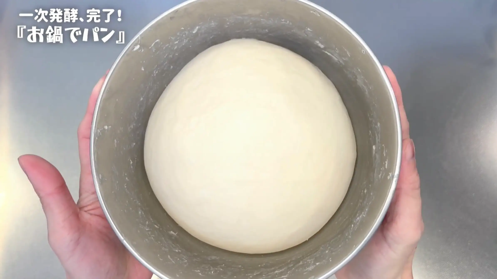
STEP 7
生地を6分割する
生地を作業台に取り出し、6分割します。
生地を作業台に取り出し、6分割します。
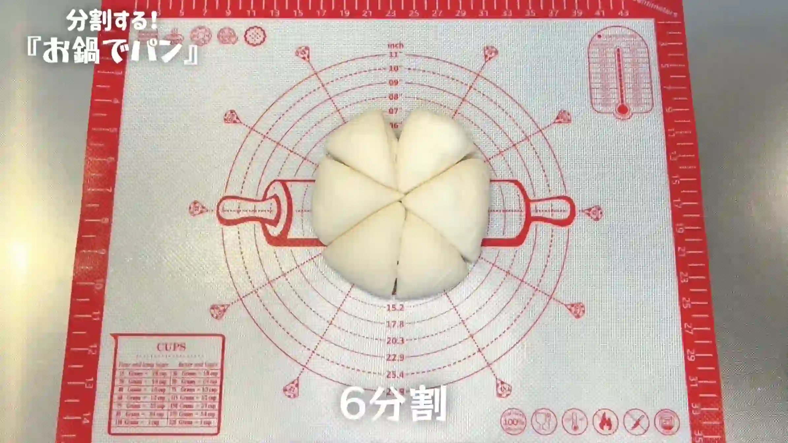
STEP 8
生地を丸め、室温で10分おく
それぞれの生地を一度丸め、乾燥しないようにラップをして10分ほど休ませます。休ませた後にもう一度丸め直すことで、生地の表面に張りが出て、焼いたときにふっくらと膨らみやすくなります。
それぞれの生地を一度丸め、乾燥しないようにラップをして10分ほど休ませます。休ませた後にもう一度丸め直すことで、生地の表面に張りが出て、焼いたときにふっくらと膨らみやすくなります。
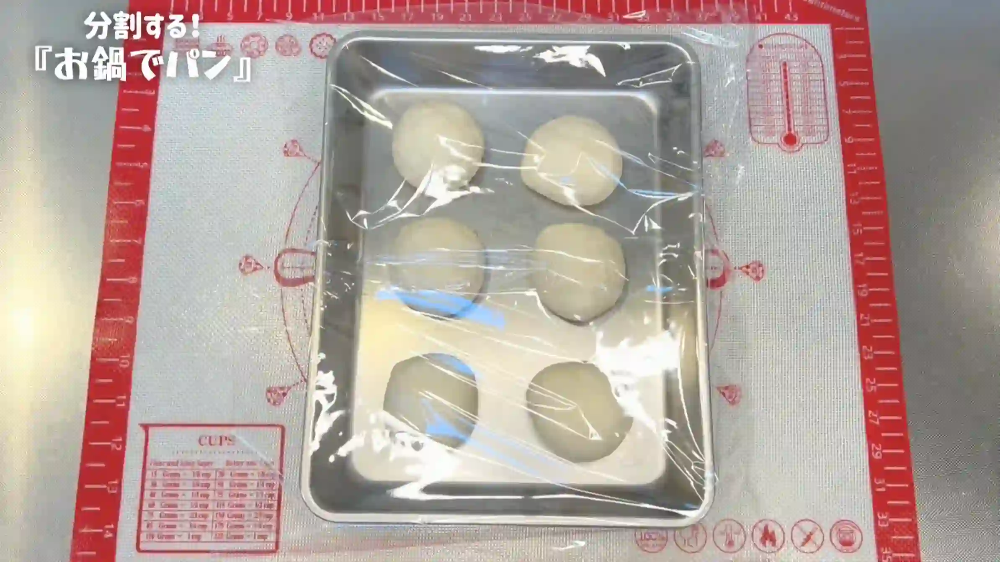
STEP 9
お鍋にバターを塗る
生地を休ませている間に、お鍋の内側にバターを塗ります。バターを塗っておくことで、焼き上がったパンを取り出しやすくなり、底にも香ばしい焼き色がつきやすくなります。オーブンシートを敷いてもOKです。
生地を休ませている間に、お鍋の内側にバターを塗ります。バターを塗っておくことで、焼き上がったパンを取り出しやすくなり、底にも香ばしい焼き色がつきやすくなります。オーブンシートを敷いてもOKです。
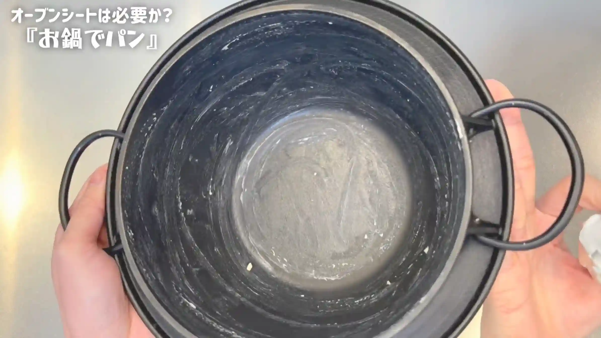
STEP 10
生地を丸め直し、お鍋に入れる
生地をもう一度丸め直して表面を整え、お鍋に並べます。お鍋の縁に沿わせるようにお花型に並べると、ちぎりパンのように焼き上がります。
生地をもう一度丸め直して表面を整え、お鍋に並べます。お鍋の縁に沿わせるようにお花型に並べると、ちぎりパンのように焼き上がります。
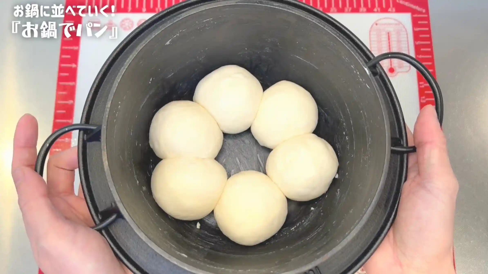
STEP 11
室温で50分おく
乾燥しないように蓋またはラップをして、二次発酵させます。50分を目安に、生地がふっくらとひと回り大きくなってきたら焼成へ進みます。室温によって発酵時間が変わるため、生地の状態を見ながら調整してください。
乾燥しないように蓋またはラップをして、二次発酵させます。50分を目安に、生地がふっくらとひと回り大きくなってきたら焼成へ進みます。室温によって発酵時間が変わるため、生地の状態を見ながら調整してください。
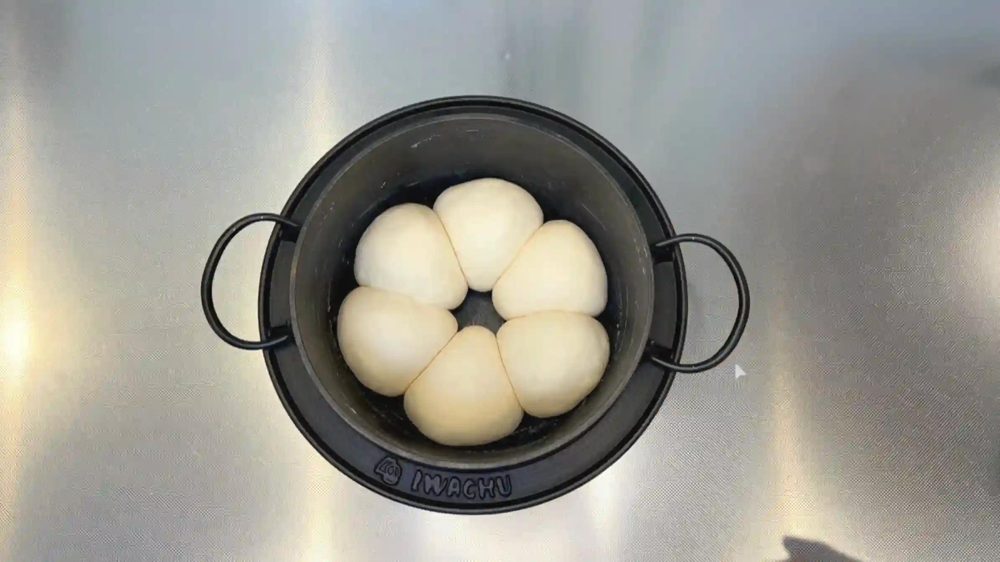
STEP 12
オーブンを250℃で予熱する
オーブンに天板を入れ、250℃で予熱しておきます。お鍋ごと入れて焼くため、オーブン内をしっかり温めておくことがポイントです。
オーブンに天板を入れ、250℃で予熱しておきます。お鍋ごと入れて焼くため、オーブン内をしっかり温めておくことがポイントです。
STEP 13
牛乳を塗る
生地の表面に牛乳を薄く塗ります。焼き上がりにほどよく焼き色をつけるため、表面全体に均一に塗っておきます。
生地の表面に牛乳を薄く塗ります。焼き上がりにほどよく焼き色をつけるため、表面全体に均一に塗っておきます。
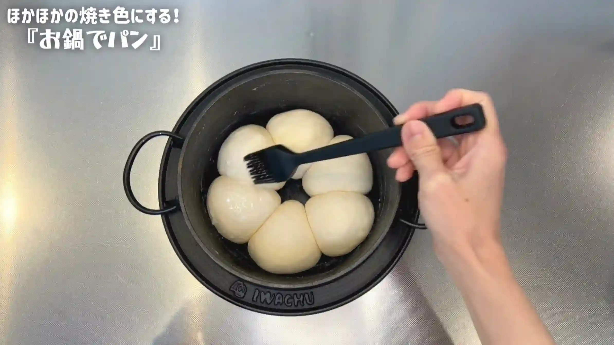
STEP 14
オーブン200℃で30分焼く
オーブン200℃で30分焼きます。表面に焼き色がついてきたら、蓋またはアルミホイルをかぶせて焼き上げます。焼き時間は目安とし、焼き色を確認しながら、ご家庭のオーブンに合わせて調整してください。
オーブン200℃で30分焼きます。表面に焼き色がついてきたら、蓋またはアルミホイルをかぶせて焼き上げます。焼き時間は目安とし、焼き色を確認しながら、ご家庭のオーブンに合わせて調整してください。
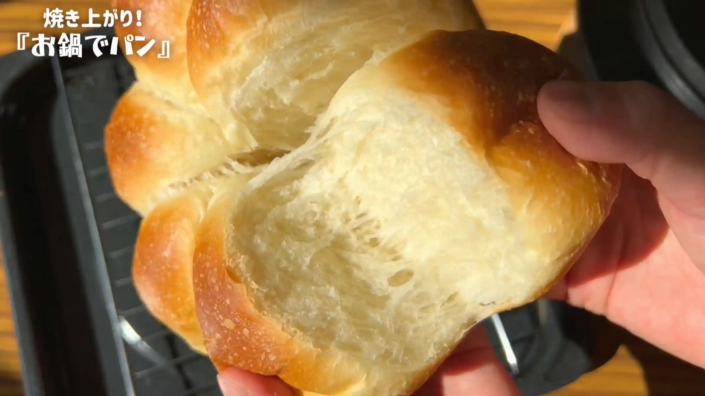
動画でチェック
おいしく作るためのワンポイントコラム
「寒い日に、ほっこりとおうちでお鍋パンを焼いてみる」なんて、まるで丁寧な暮らしのようで憧れますよね！私自身ずっと挑戦したかった『お鍋パン』ですが、実際に作ってみると驚くほど簡単！今回はお気に入りの南部鉄器『岩鋳のごはん鍋』を使用していますが、オーブン対応のお鍋があればご家庭で手軽に作れます。極上の『お鍋パン』を焼き上げるための「3つのコツ」をご紹介します。
① 冬場でも失敗しない発酵
寒い季節のパン作りで最も大切なのが仕込み水の温度管理です。今回はお湯と冷たい牛乳を混ぜ合わせ、30〜35℃の人肌程度の温度に整えてから仕込むのがポイント！捏ね方は、少し混ぜてあとは待つだけの『ちょい捏ね』スタイル。人肌の水分でイーストを心地よく目覚めさせ、乾燥を防ぎながら3時間半〜4時間かけてじっくり育てることで、冬場でもふんわり豊かに発酵してくれます。
② ベタつく生地をまとめるコツ
そのまま食べて飛び切り美味しいパンを目指し、今回は牛乳とバターをリッチに配合しました！牛乳の優しい甘みとバターのコクが広がるしっとり生地ですが、その分最初はベタつきやすく不安になるかもしれません。でも、焦って追い粉をしなくても大丈夫！ボウルの中でちょい捏ねを続けていると、生地がボウルからつるっと離れる状態にまとまってきます。仕上げに1分ほどボウル内で叩くだけでベタつきがすっと収まり、焼いた時にパーンとハリのある可愛いパンに仕上がります。
③ カリッと香ばしく焼くコツ
お鍋で焼く際は、クッキングシートを使わずお鍋の内側に直接バターをしっかり塗ってから生地を入れるのが私のおすすめ！シートを挟まないことでお鍋の優れた熱伝導がダイレクトに伝わり、底までムラなく綺麗な焼き色がついてカリッと香ばしく焼き上がります（※必ずお鍋や蓋の取っ手がオーブン対応可能か事前にご確認くださいね。もし蓋が非対応の場合は、アルミホイルを被せれば十分代用できます！）。
寒さが増す日に、おうちで時間をかけてパンを焼くひとときは本当に至福の刻。焼き上がりにお鍋の蓋を開けると、ふんわり上がる湯気と香ばしい香りに包まれて部屋いっぱいに幸せが広がります。ぜひお気に入りのお鍋で試してみてください！
① 冬場でも失敗しない発酵
寒い季節のパン作りで最も大切なのが仕込み水の温度管理です。今回はお湯と冷たい牛乳を混ぜ合わせ、30〜35℃の人肌程度の温度に整えてから仕込むのがポイント！捏ね方は、少し混ぜてあとは待つだけの『ちょい捏ね』スタイル。人肌の水分でイーストを心地よく目覚めさせ、乾燥を防ぎながら3時間半〜4時間かけてじっくり育てることで、冬場でもふんわり豊かに発酵してくれます。
② ベタつく生地をまとめるコツ
そのまま食べて飛び切り美味しいパンを目指し、今回は牛乳とバターをリッチに配合しました！牛乳の優しい甘みとバターのコクが広がるしっとり生地ですが、その分最初はベタつきやすく不安になるかもしれません。でも、焦って追い粉をしなくても大丈夫！ボウルの中でちょい捏ねを続けていると、生地がボウルからつるっと離れる状態にまとまってきます。仕上げに1分ほどボウル内で叩くだけでベタつきがすっと収まり、焼いた時にパーンとハリのある可愛いパンに仕上がります。
③ カリッと香ばしく焼くコツ
お鍋で焼く際は、クッキングシートを使わずお鍋の内側に直接バターをしっかり塗ってから生地を入れるのが私のおすすめ！シートを挟まないことでお鍋の優れた熱伝導がダイレクトに伝わり、底までムラなく綺麗な焼き色がついてカリッと香ばしく焼き上がります（※必ずお鍋や蓋の取っ手がオーブン対応可能か事前にご確認くださいね。もし蓋が非対応の場合は、アルミホイルを被せれば十分代用できます！）。
寒さが増す日に、おうちで時間をかけてパンを焼くひとときは本当に至福の刻。焼き上がりにお鍋の蓋を開けると、ふんわり上がる湯気と香ばしい香りに包まれて部屋いっぱいに幸せが広がります。ぜひお気に入りのお鍋で試してみてください！


おうちのオーブン対応お鍋を使って、ちぎって楽しいお花形に焼き上げる『お鍋パン』のレシピです！お鍋ならではの抜群の熱通りで、外はカリッと、中はふっくらしっとり仕上がります。コラムでは、おうちでおいしく仕上げるための3つをご紹介します。